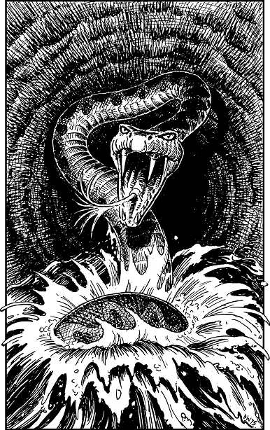

214
Quickly you locate the grating and Hulsta uses his dagger to dig out the grime that cements it in place. Once it is cleared, together you lift the grating away and peer down at the river flowing below. Hulsta is anxious about the depth of the water and so he ties a chunk of brick to the end of his rope and lowers it into the flow. When he withdraws it you are both relieved to see that the water here is little more than waist-deep. You are the first to enter the river, and then you take hold of the lantern to allow Hulsta to drop down behind you. Your Magnakai Discipline of Nexus protects you from the water’s icy chill, but Hulsta is not so fortunate. He gasps with shock when he enters the water and you realize that he will not be able to tolerate its freezing temperature for more than a few minutes at most.
Mindful of your companion’s discomfort, you hand him back the lantern and then lead the way along this circular channel. You are peering at the rough-hewn ceiling, seeking out the next grating, when suddenly you feel something brush against your thigh. You glimpse a trail of bubbles and instinctively you pull away, tugging your weapon from its scabbard as you recoil. Moments later, the scaly head of a large black serpent breaks through the surface and rears up before your face. Its venomous fangs glint in the lantern-light and its forked crimson tongue flickers wildly, sensing prey. Hulsta cries out in alarm as the great black snake jerks back its head and narrows its ghoulish green eyes. It is getting ready to strike.

If you possess Kai-alchemy and wish to use it, turn to 130.
If you possess Magi-magic and wish to use it, turn to 29.
If you possess Kai-surge and wish to use it, turn to 4.
If you possess Animal Mastery or an Eye of Lhaz and wish to use it, turn to 96.
If you possess none of these Disciplines nor this Special Item, or if you choose not to use any of them, turn to 317.